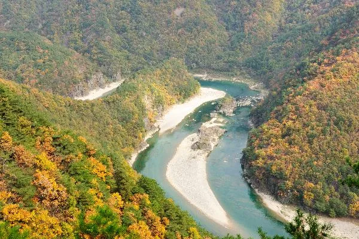
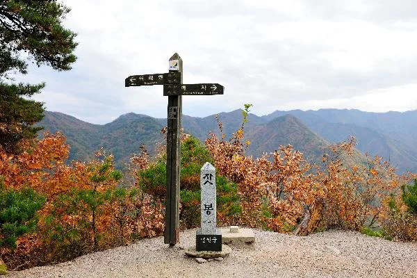
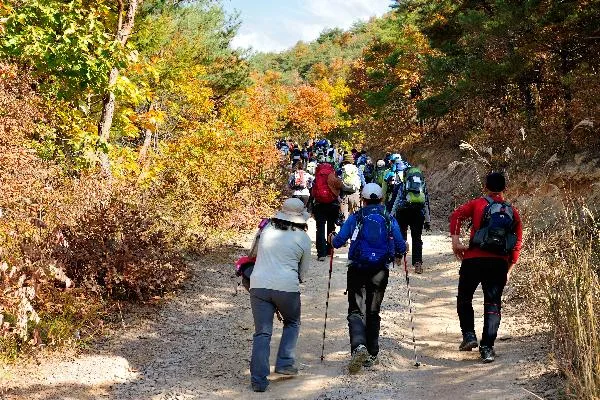
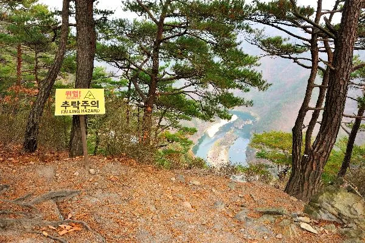
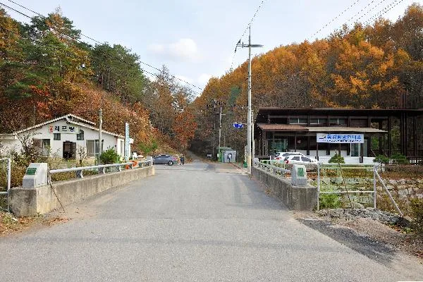

▲ 동강 어라연을 하늘에서 내려다본 가을 풍경. 협곡을 감싼 산자락이 단풍으로 물들면 물굽이가 더 선명하게 드러난다 사진=영월군청
1. 명승 제14호, 어라연은 어떤 곳인가
어라연(魚羅淵)은 강원 영월군 영월읍 거운리 동강 상류에 자리한 협곡으로, 2004년 12월 7일 대한민국 명승 제14호로 지정됐다. 지정 구역 면적은 약 167만 7,824㎡에 이르며, 국가유산포털은 이곳을 "하천지형이 다양하게 나타나는 천혜의 보고"로 소개한다. 감입곡류하천과 수직 절벽, 상선암·중선암·하선암으로 불리는 하중도, 구하도 등 하천 지형이 한자리에 모여 있고, 어름치·수달·황조롱이·원앙 등 천연기념물과 비오리 등 야생동물의 집단 서식지이기도 하다. 이름은 한자로 '고기 어(魚)', '벌일 라(羅)', '못 연(淵)'을 쓰는데, 물 반 고기 반이라 할 만큼 물고기가 많아 비늘이 비단결처럼 반짝인다고 해서 붙은 이름으로 전해진다.

▲ 해발 537m 잣봉 정상. 어라연을 굽어보는 전망대 역할을 하는 봉우리다 사진=영월군청
2. 전망대까지 왕복 — 잣봉 트레킹 코스
가장 널리 알려진 코스는 거운분교(거운리)에서 출발해 잣봉(537m) 정상을 지나 어라연 전망대, 만지나루를 거쳐 다시 거운분교로 돌아오는 원점회귀 코스다. 전체 길이는 약 7km, 쉬는 시간을 포함하면 3시간 30분에서 4시간 정도 걸린다. 초반 숲길을 지나 잣봉 능선에 오르면 발아래로 협곡을 감싸고 도는 어라연 물줄기가 한눈에 들어오는데, 이 구간이 코스의 핵심으로 꼽힌다. 잣봉 정상까지 오르는 길이 부담스럽다면, 만지나루에서 곧장 어라연 전망 지점까지 걸었다가 되돌아오는 왕복 약 2시간 30분 코스를 택할 수도 있다. 난이도는 초등학생도 완주할 수 있는 수준으로 소개되지만, 능선 구간에는 오르막 돌길이 있어 만만치는 않다. 코스 중간에는 샘터나 매점이 없어 거운분교나 어라연상회를 지나기 전 미리 물과 간식을 챙겨야 하며, 방향 안내 표지판은 구간마다 잘 설치돼 있는 편이다.

▲ 거운분교에서 잣봉으로 오르는 숲길. 단풍철 주말이면 트레킹객들이 줄지어 걷는다 사진=영월군청
전망 지점 곳곳에는 벼랑 아래로 곧장 이어지는 급경사가 있어 '추락주의' 안전 표지가 세워져 있다. 협곡 지형인 만큼 난간이 없는 구간이 많으므로, 사진을 찍을 때도 표지판 안쪽에서 거리를 두는 편이 안전하다.

▲ 잣봉 능선의 전망 지점. '추락주의' 표지 너머로 어라연 물굽이가 펼쳐진다 사진=영월군청
3. 여름의 흔적 — 동강 래프팅, 이제 시즌을 정리할 때
어라연을 낀 동강 구간은 여름철 대표 래프팅 코스이기도 하다. 문산에서 섭세나루터까지 이어지는 어라연 코스는 두꺼비바위와 어라연, 된꼬까리 여울 등을 2시간 30분~3시간 안팎으로 통과하며 급류를 즐기는 방식으로, 초보자도 참여할 수 있는 난이도로 소개된다. 다만 래프팅은 수온의 영향을 크게 받는 계절 액티비티다. 영월 지역 정보를 정리한 디지털영월문화대전에 따르면 동강 래프팅은 한겨울에는 강물이 얼어 운영이 불가능하며, 10월부터 이듬해 5월까지는 운영이 중단돼 사실상 6~9월에만 즐길 수 있다. 다만 정확한 종료 시점과 예약 가능 여부는 수온·수량 등 그해 기상 상황과 업체별 사정에 따라 달라질 수 있어, 10월 방문이라면 사전에 개별 업체에 확인하는 편이 안전하다.
📍 트레킹 + 래프팅, 같이 즐기고 싶다면
래프팅 시즌이 끝나기 전이라면 오전에는 잣봉~어라연 트레킹으로 단풍을 즐기고, 오후에는 동강 래프팅으로 마무리하는 일정도 가능하다. 다만 계곡물은 가을로 갈수록 빠르게 차가워지므로, 시즌 막바지 래프팅은 보온 장비를 꼭 챙겨야 한다.
4. 접근로와 주차 — 거운리 코스 기준
영월군청 문화관광 안내에 따르면 어라연 일원은 입장료가 없고, 거운리 주차장(어라연길 일대)에 60대 안팎을 세울 수 있는 무료 주차장이 마련돼 있다. 트레킹 들머리인 거운분교 인근에는 래프팅 대여점과 매표 시설이 모여 있어, 출발 전 코스 안내를 받기에도 편리하다. 좀 더 자세한 탐방 지도가 필요하면 인근 동강탐방안내소(삼옥안내소)에서 구할 수 있다. 강변 쉼터인 어라연상회를 비롯해 다슬기 요리로 알려진 식당들이 거운리·문산리 일대에 있어 트레킹 전후 요기하기에도 무리가 없다. 차량 접근은 영월 시내에서 지방도를 따라 이동하는 방식이며, 도로 폭이 넓지 않은 구간이 있어 단풍철 주말에는 서행이 필요하다.

▲ 거운리 트레킹 들머리 초입. 래프팅 대여점과 다리를 지나면 본격적인 산길이 시작된다 사진=영월군청
5. 주변 연계 코스 — 이미 다녀온 곳이라면 가볍게
영월읍내를 중심으로 어라연과 함께 묶을 만한 명소도 여럿이다. 동강이 크게 휘돌아 한반도 모양을 만든 한반도지형(선암마을)은 명승 제75호로, 어라연과 같은 동강 물줄기를 조망하는 또 다른 시점이라 단풍 비교 삼아 들르기 좋다. 단종의 유배지로 알려진 청령포도 영월읍에서 멀지 않다. 두 곳 모두 이미 여러 차례 다뤄진 곳인 만큼, 이번 방문에서는 어라연 트레킹을 중심에 두고 시간이 남으면 가볍게 둘러보는 정도로 계획하는 편이 무리가 없다.
✅ 출발 전 확인할 것
· 단풍 절정 시기는 해마다 다르므로 산림청 단풍정보로 최신 시기 확인
· 전망 지점은 난간이 없는 벼랑 구간이 많아 안전 표지 안쪽에서 관람
· 왕복 최소 2시간 30분 이상 걸리는 코스이므로 편한 신발과 식수 준비
· 만지나루~어라연상회 구간은 샘터·매점이 없어 미리 식수·간식 준비
· 래프팅은 통상 10월부터 운영 중단되므로 시즌 막바지 예약은 업체별 사전 확인 필수